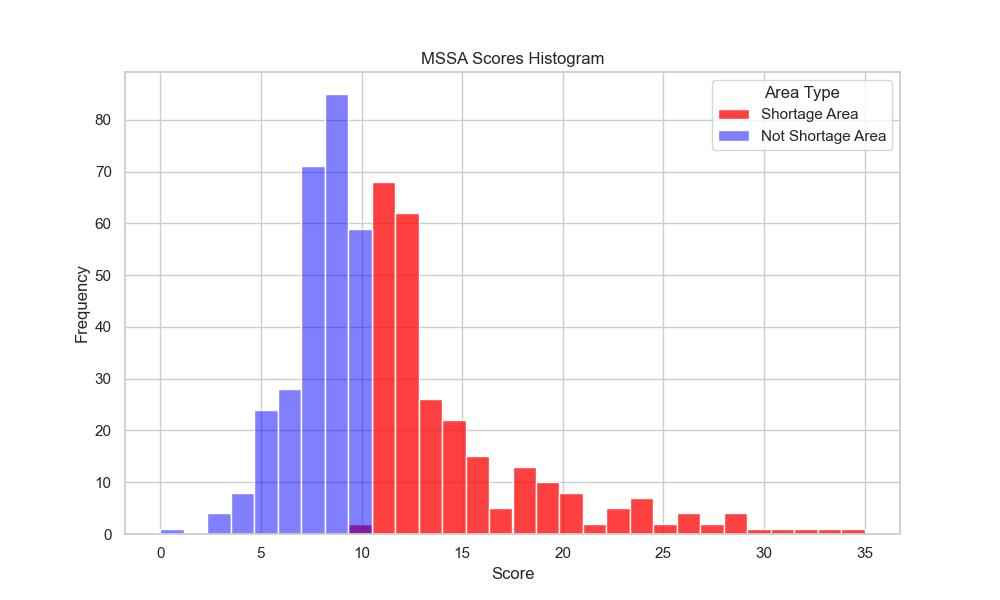

MSSA Scoring Algorithm
After leaving my internship at Picarro, with intensive spatial analysis with GeoPandas, ArcGIS, and connection to many APIs (GeoServer, ESRI, Box), I decided to take the skills that I learned into a field that I would like to explore more – the healthcare industry. This spatial analysis assigns priority scores to Medical Service Study Areas (MSSA) based on a myriad of factors to encapsulate both a region’s access to a healthcare provider and its range of care.
This scoring algorithm is an expansion of the Department of Healthcare Access and Information (HCAI)'s scoring algorithm of MSSAs. Compared to their binary scoring system, this project provides insight into which areas are most in need of resource allocation. Although this brief analysis is only for the state of California, it holds a lot of potential for the rest of the nation.
The priority score is calculated from two main components: data from the MSSA itself and hospital data. The MSSA portion includes factors such as poverty rate and provider-to-patient ratio, whereas the hospital data portion includes mortality rates and the Case Mix Index (CMI), which assigns higher scores to hospitals with complexity and diversity of patients discharged. All factors are binned based on percentiles on a scale of 0 to 5. Additionally, as some MSSAs do not have any hospitals within them, the two nearest hospitals are used, with their distance converted into a hospital score multiplier – that is, the further the closest hospital is from the MSSA, the higher it will contribute to the priority score.
After score calculation, I have set the threshold of “high priority” MSSA priority scores to be the median (10.25 and above). This means out of 542 MSSAs in California, 262 were considered high priority, in contrast to HCAI's 268 MSSA areas designated as Primary Care Shortage Areas (PCSAs). Common cases include rural areas where nearest hospitals are very far away or hospitals that have high mortality rates or low CMIs.
This expanded scoring model for MSSAs offers a more nuanced approach to assessing healthcare accessibility and quality than HCAI's current binary scoring system. However there are some limitations to this algorithm that must be mentioned. One limitation includes inaccurate quantification of distance, as it currently does not consider traffic patterns or roads. One other area of improvement is to include more factors, as the current factors in the algorithm only partially determine a shortage. Future improvements will be aimed towards adding additional factors and also expanding the range of states beyond California. With further refinement, this algorithm can represent a significant step toward addressing disparities in healthcare access and quality.
If you'd like to check the repo for this project, click here: